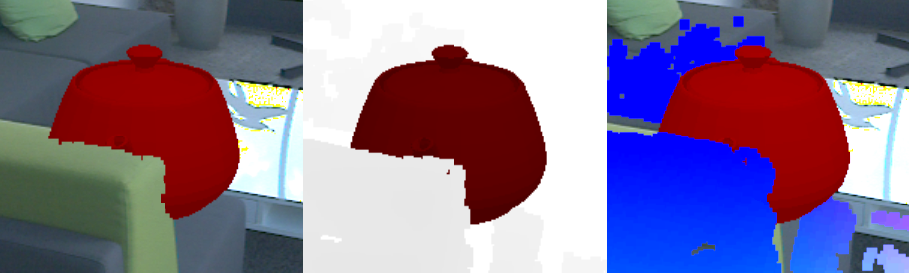
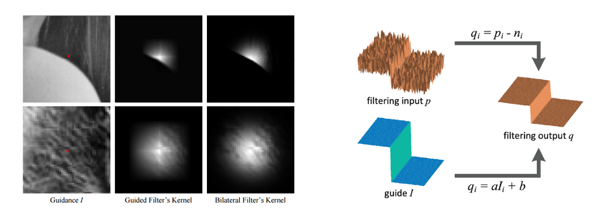
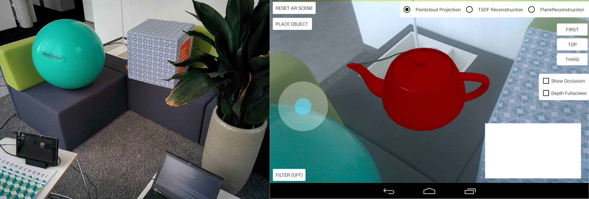
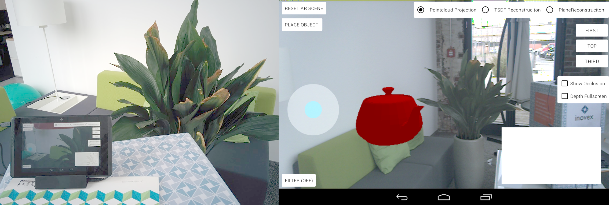
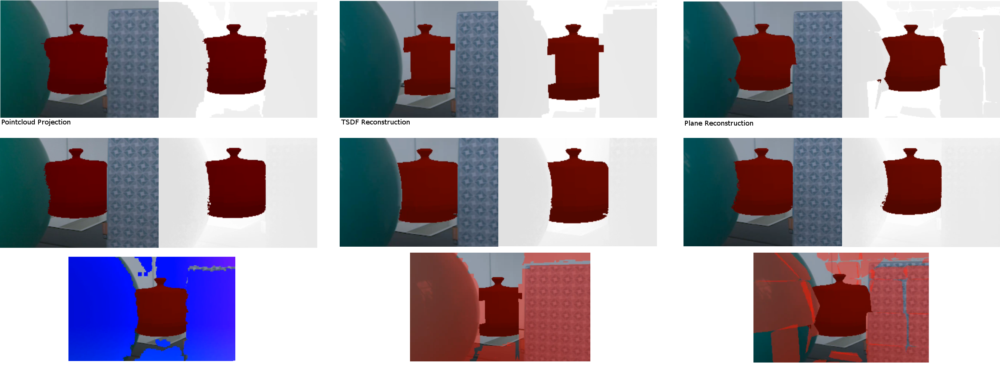
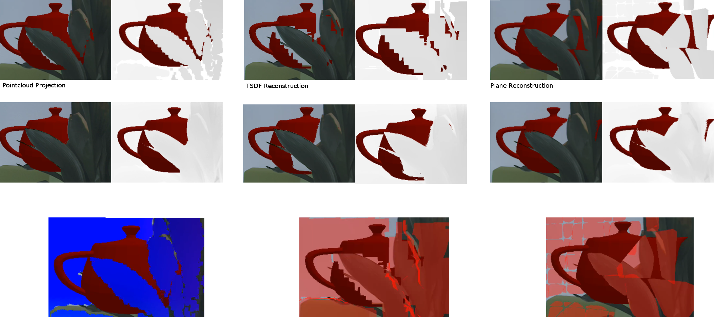
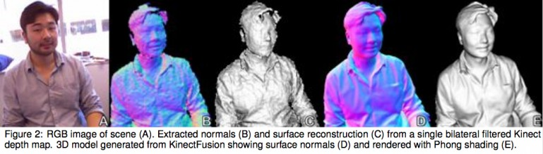

Master Thesis - Kolloquium
"Optimierung von Augmented Reality Anwendungen durch die Berücksichtigung von Tiefeninformationen mit Googles Project Tango"
Steffen Tröster
Köln, 04.05.2016
Technische Hochschule Köln
Project Tango

(mobilegeeks.de)
(Google Project Tango)
Motion Tracking
(Google Project Tango)
Depth Perception

(Google Project Tango)
Area Learning

(Google Project Tango)
Anwendungsgebiete

(Google Project Tango)
Augmented Reality
Realitäts-Virtualitäts-Kontinuum

Milgram, Takemura, Utsumi, u. Kishino (1995)
Problemstellung & Motivation

Lösungsansatz: Grundsätzlich mithilfe eines Tiefenbildes und dem
Z-Buffer, beschrieben im Vorgehen von Wloka u. Anderson (1995)
Ermittlung der Tiefeninformationen
Tiefenbild aus Pointcloud Projektion
Naiver Ansatz
Sensordaten werden direkt auf Tiefenbuffer projiziert

Ebenenrekonstruktion
Zusammenstellung des Verfahrens

Clustering

Umsetzung im Prototypen
TSDF Rekonstruktion
Chisel - Klingensmith u.a. (2015)
- Optimiertes Verfahren für mobile Endgeräte
- Anwendung der TSDF Datenstruktur
- Speicherersparnis durch Spatial Hashing
- Marching Cubes Rendering
- Space Carving Funktionalität

Truncated Signed Distance Function

2D Occupancy Maps a)
2D Truncated Signed Distance Function b), c)
Sturm (2014)
Spatial Hashing - Nießner u.a. (2013)

$$H(x,y,z) = (x * p_1 \oplus y * p_2 \oplus z * p_3) \mod n$$
Klingensmith u.a. (2015)
Marching Cubes

Raphael u. Karen (2002)
Umsetzung im Prototypen: OpenChisel
Guided Filter
Voxel und Rauschen erzeugen Fehler
Idee: Eine Filterung auf Bildebene
Filter
He u.a. (2013)


Prototyp

Zu finden auf GitHub
Demo
Gegenüberstellung
Statische Testszene #1
Statische Testszene #2
Vergleich durch Abweichung zur Maske

Durchführung der Tests #1
Durchführung der Tests #2
Bestimmung der Distanz


Fragestellungen und Optimierungen
Optimierung der Ebenenrekonstruktion
Einführung mancher Chisel Features
- Spatial Hashing
- Space Carving
- Tiefenbegrenzung (Rauschunterdrückung)
Wie können angrenzende Flächen verbunden werden?
Optimierung von Chisel
GPU Implementierung
- Kleinere Voxel erhöhen den Detailgrad der Rekonstruktion
- Marching Cubes könnte durch Raycasting ersetzt werden

Microsoft Kinect Fusion (2015)
Fragestellungen zum Guided Filter
- Warum können manche Fehler gegenüber anderen revidiert werden?
- Wie stark beeinflusst die 8 Bit Umsetzung das Ergebnis?
- Wie können die Artefakte verhindert werden?

Optimierung des Guided Filter
Implementierung als OpenGL Fragmentshader
Optimierung der Tiefenbilder
Anwendung des Filters vor der Integration in die Rekonstruktion
Newcombe u.a. (2011)
Alternativ: Anwendung von anderen Depth-Upsampling Mechnaismen
Shadow Vertex Shader Demo
Résumé
Hürden und Probleme
- Fehlende reproduzierbare dynamische Tests (ROS-bag Simulation)
- Kompromiss zwischen thematischer Tiefe und Alternativen
- Ebenenrekonstruktion wurde weniger vielversprechend
- Neue Forschungsgebiete der mobilen Echtzeitrekonstruktion
- Kein "Glasklares" Ergebnis
Persöhnliche Technische Herausforderungen
- Erste Anwendung von OpenGL
- Android Native Entwicklung
- Android Crosscompiling (OpenCV ...)
- OpenChisel Portierung aus ROS
- OTAs mit breaking Changes
Persöhnliche Reflektion
- Trotz einiger Sackgassen guter Prozess
-
Neue Tango Releases nah an eigener Entwicklung:
- AR Examples
- Raycasting & RANSAC Ebenendetektion
- Depth Upsampling
- Bilateral Depth Filtering
- Interessantes Feedback aus der Community
Vielen Dank!
Fragen?
Vielen Dank!
Steffen Tröster
inovex Lab
inovex GmbH
Schanzenstraße 6 - 20
51063 Köln
inovex.de